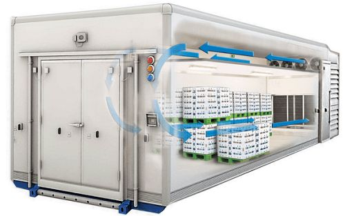
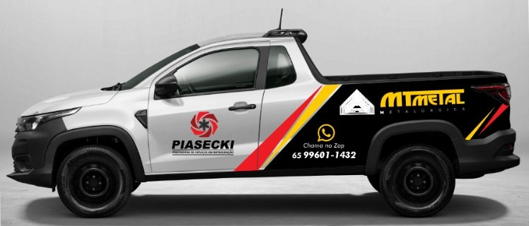

Instalação
Montagem de câmaras frias com atenção ao espaço, à aplicação e às necessidades de conservação.
Planejar minha instalação ↗INSTALAÇÃO · MANUTENÇÃO · CONSERTO
Soluções em câmaras frias para conservar seus produtos e cuidar do que faz o seu negócio acontecer.
NOSSA ESPECIALIDADE
Da instalação ao reparo, o cuidado com a refrigeração acompanha cada etapa da sua operação.
Montagem de câmaras frias com atenção ao espaço, à aplicação e às necessidades de conservação.
Planejar minha instalação ↗Revisão dos componentes e do funcionamento para identificar desgastes e manter o sistema em boas condições.
Cuidar da minha câmara ↗Diagnóstico de falhas e reparos para recuperar o funcionamento da câmara fria e sua capacidade de refrigeração.
Preciso de um reparo ↗CENA ILUSTRATIVA
Referência visual para operações que precisam de armazenamento refrigerado.
ENGENHARIA DO FRIO

SOLUÇÕES PARA SUA OPERAÇÃO
Cada produto tem uma necessidade. Cada operação, uma rotina. A escolha e o cuidado com a câmara fria devem considerar as duas.
Mercados / Açougues / Restaurantes / Distribuidoras
DO PRIMEIRO CONTATO À SOLUÇÃO
Um caminho claro para você saber o que sua câmara fria precisa e decidir o próximo passo.
Explique o serviço, a localização e o que está acontecendo com o equipamento.
As condições do sistema e do local orientam o diagnóstico e o escopo do serviço.
Com os detalhes alinhados, o serviço segue conforme o que foi combinado.
ATENDIMENTO NO LOCAL
Nossa equipe chega com o veículo da empresa, identificado e equipado, para instalar, revisar ou consertar a câmara fria onde ela está.
Agendar uma visita ↗
ATENDIMENTO NA GRANDE CUIABÁ
Instalação nova ou uma câmara precisando de atenção?
Fale diretamente com a Piasecki pelo WhatsApp.
Atendimento na região metropolitana de Cuiabá.